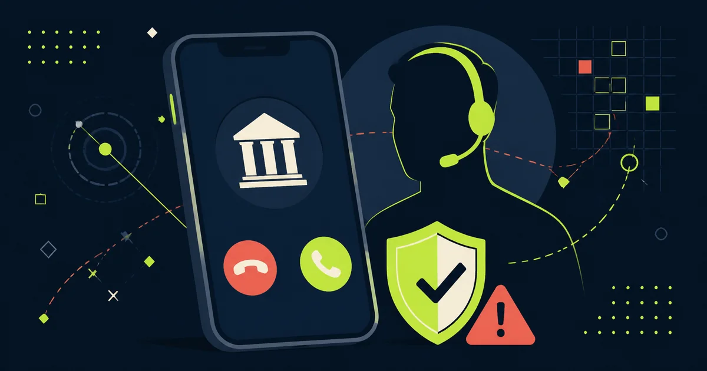

In breve
Il numero sul display non dimostra chi ti sta chiamando.
Nel rapporto pubblicato il 24 giugno 2026, Banca d’Italia rileva che il 57% dei furti di credenziali esaminati è avvenuto tramite tecniche di ingegneria sociale come phishing, smishing e vishing. Nel 60% di questi casi le tecniche erano abbinate allo spoofing, che può far apparire un numero o un mittente diverso da quello reale.
Fonti istituzionali controllate. Dati e indicazioni provengono dal rapporto 2025 di Banca d’Italia e dalla guida contro le truffe pubblicata da ABI nel 2026.
Come funziona la telefonata
Il truffatore si presenta come dipendente della banca, dell’ufficio antifrode o, in alcuni casi, come appartenente alle forze dell’ordine. Può conoscere il tuo nome e usare un tono professionale. Sul display può perfino apparire il numero autentico della banca: è l’effetto dello spoofing, una tecnica che falsifica il mittente mostrato.
La storia cambia, ma lo schema è simile: un pagamento non riconosciuto, la carta bloccata, un accesso sospetto o un conto “sotto attacco”. L’obiettivo è creare urgenza e convincerti a comunicare credenziali, PIN o codici temporanei, installare un’app di controllo remoto oppure trasferire il denaro verso un presunto “conto sicuro”.
Il vishing è il phishing effettuato a voce, per telefono. Una banca può contattarti per verificare un’operazione, ma non ti chiederà password, PIN o codici di accesso all’home banking. Un codice OTP non annulla una truffa: può autorizzarla.
I segnali da non ignorare
- Ti impedisce di riflettere. L’operatore sostiene che devi agire subito, mantenere la chiamata aperta o non avvisare nessuno.
- Chiede informazioni segrete. Password, PIN, CVV e codici OTP non devono essere comunicati al telefono, neppure a chi sembra conoscere i dati della banca.
- Propone un conto “sicuro”. Non eseguire bonifici o ricariche seguendo le istruzioni di una chiamata ricevuta.
- Vuole controllare il dispositivo. Non installare app suggerite dall’interlocutore e non condividere lo schermo: potrebbero permettergli di operare al posto tuo.
- Il numero sembra autentico. Non è una prova: lo spoofing può imitare il numero della banca o inserire il messaggio in una conversazione SMS già esistente.
Come verificare senza correre rischi
Interrompi la chiamata
Non seguire altre istruzioni e non richiamare il numero apparso tra le chiamate recenti. Un operatore autentico accetterà che tu faccia una verifica indipendente.
Usa un canale scelto da te
Apri direttamente l’app ufficiale oppure chiama il numero stampato sul retro della carta o pubblicato sul sito della banca, digitato personalmente. Non usare recapiti forniti dal chiamante o contenuti nel messaggio sospetto.
Controlla movimenti e notifiche
Verifica dall’app eventuali pagamenti, bonifici, nuovi beneficiari o accessi. Se qualcosa non torna, chiedi all’assistenza ufficiale di mettere in sicurezza il rapporto.
Hai già seguito le istruzioni?
- Hai comunicato credenziali, PIN o codici: contatta immediatamente la banca tramite il numero ufficiale, cambia le credenziali e chiedi il blocco degli strumenti compromessi.
- Hai installato un’app di controllo remoto: scollega il dispositivo da Internet. Da un altro dispositivo affidabile contatta la banca e cambia le password; non accedere di nuovo al conto dal dispositivo compromesso finché non è stato controllato.
- Hai effettuato un bonifico o un pagamento: chiama subito la banca per chiedere se l’operazione può essere bloccata, richiamata o contestata. Conserva numeri, messaggi, ricevute e schermate.
- Vedi un’operazione non autorizzata: segnalala senza ritardo alla banca e chiedi il rimborso. Se la richiesta viene respinta, sono disponibili il reclamo alla banca e, quando applicabile, il ricorso all’Arbitro Bancario Finanziario. L’esito dipende dalle circostanze del caso.
Segnalare serve
Una denuncia alle forze dell’ordine non è obbligatoria per chiedere alla banca il rimborso di un’operazione non autorizzata, secondo Banca d’Italia, ma è utile a documentare l’accaduto e può aiutare le indagini. Puoi rivolgerti alla Polizia Postale o a un altro ufficio di polizia. Non pubblicare online dati bancari, codici o documenti completi.
Trasparenza
Fonti verificate
Aggiornamenti e correzioni
Nessuna correzione al momento. Per segnalare un errore o un aggiornamento scrivi a redazione@hackerino.it.
Aiuta la redazione
Hai ricevuto una telefonata simile?
Puoi inviarci una segnalazione evitando password, codici temporanei, numeri completi della carta e altri dati riservati.